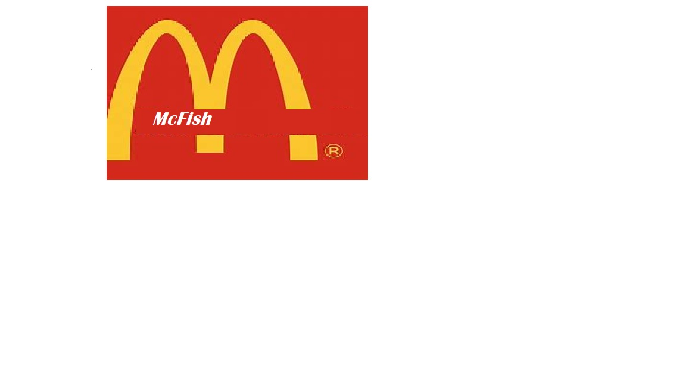

Wer ist McFish?
McFish ist ein Jahrhundert altes Unternehmen welches weltweit die "Besten" Fischwahren verkauft. Es steht im besitzt der Familie Große-Hering welche dieses Unternehmen nicht nur führen, sondern auch einst gründeten. Seit beginn hat McFish weltweit über 20.000 FillialenIm vergleich zu anderen Fast-food Restaurants, verkauft McFish bloß Fische, feinster Qualität. Dazu herrscht auch ein perfektes Preis-Leistungs Verhältniss
